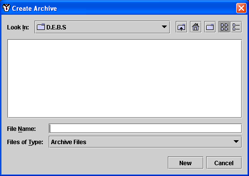
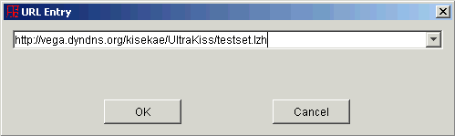
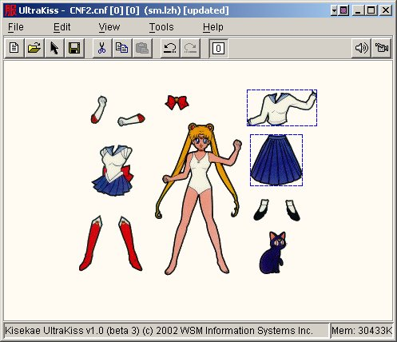
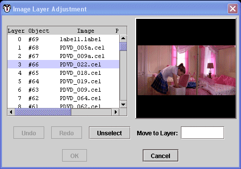
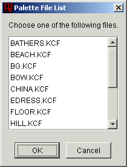
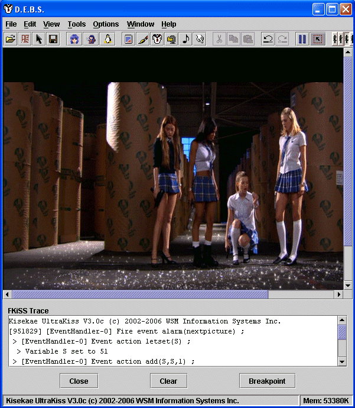
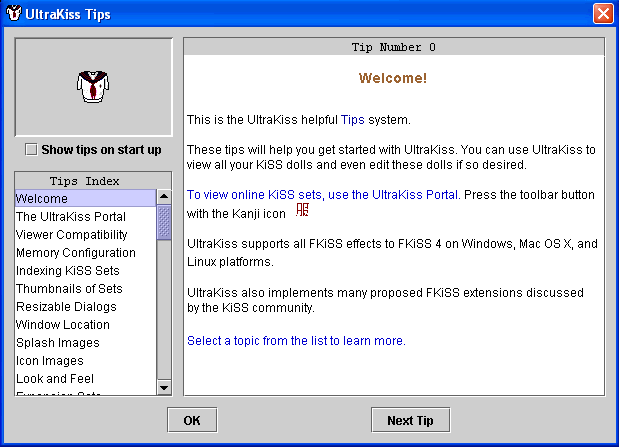
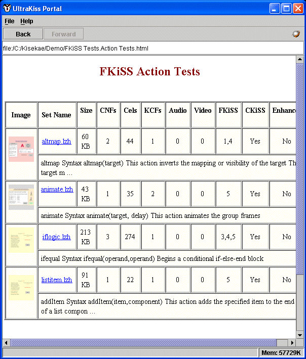

Welcome to the Kisekae UltraKiss program documentation. The UltraKiss Menu provides a standard drop down list of commands for all program functions.
UltraKiss can load complete data sets or expansion sets that contain additional objects necessary to extend or enhance an existing KiSS data set. Expansion sets must be added into the UltraKiss program after the original data set has been loaded. UltraKiss can reuse objects from the currently loaded data set if the expansion set objects are not contained within the expansion archive file.
KiSS sets are defined by a KiSS configuration file, or CNF file. A KiSS configuration file is a text file that identifies image cels, color palettes, and programmed events associated with a KiSS data set. KiSS configuration files may be opened from a file directory or a compressed archive file. When a configuration is opened and initialized all objects defined by the configuration are read into the UltraKiss program from the parent file directory or archive file.
The new data set configuration file can be saved to a named file directory through the File-Save As command. If a configuration is saved all imported palette elements, cel elements, and other elements are written to the named file directory.
The Open command is used to open a new KiSS data set configuration file or any other file recognized by the Kisekae UltraKiss program. The UltraKiss program can open KiSS archive files, KiSS configuration elements, KiSS palette elements, KiSS cels, standard text files, rich text files, image files, sound files, and movie files.
KiSS configuration elements are processed with the UltraKiss program. KiSS palette elements are automatically opened with the Color Editor tool. Text elements are opened with the Text Editor tool. KiSS cels and image files are loaded into the Image Editor tool. Sound and movie files are played by the Media Player.
A KiSS configuration file is a text file that identifies image cels, color palettes, and programmed events associated with a KiSS data set. KiSS configuration files may be opened from a file directory or a compressed archive file. When a configuration is opened and initialized all objects defined by the configuration are read into the UltraKiss program from the parent file directory or archive file.
Figure 1 shows a file Open dialog. Your dialog may appear slightly different depending on your system software platform. To load a KiSS set you must select either an archive files of type LZH or ZIP, or a KiSS configuration file with a CNF extension. If the selected file is a compressed archive file then it will be opened and the archive will be searched for KiSS configuration elements. If the file is of any other type then the appropriate editing tool for the file type will be invoked. If the file is not recognized then the user is prompted to open the file as a text file.
Figure 1. Open Dialog
The example in Figure 1 selected the archive file TESTSET.LZH. When opening archive files, if only one configuration element exists within the archive file then this element will be automatically loaded. If many configuration elements exist in an archive file then the UltraKiss program will display a selection dialog listing as shown in Figure 2.

Figure 2. Configuration Selection
When a configuration element is selected it will be opened and processed. Figure 3 shows an UltraKiss configuration file load progress window. Data set files are loaded as a background activity. The file load progress window tracks the load of the configuration objects and displays any appropriate error message. This window may be minimized if desired.

Figure 3. File Load Window
A loaded configuration is automatically initialized on load completion if no load errors occurred. If the window was minimized then it must be restored and the Play or OK button pressed to activate the new configuration.
The example load shown in Figure 3 had two syntax errors. Errors can be fatal or non-fatal. Non-fatal errors can be corrected by pressing the Edit button to edit the KiSS configuration file. These types of errors can also be ignored if the Play button is pressed to initialize the new configuration. Fatal errors are not recoverable and the configuration load must be cancelled. For related information see the Text Editor documentation.
When a configuration is initialized any currently active configuration is closed. Note that configuration file loading can be cancelled at any time by pressing the Cancel button.
The Add command is used to add expansion data sets to an open KiSS data set configuration file. A Configuration Selection dialog as shown in Figure 2 is displayed. All configuration files found in the current data set archive are listed in the selection dialog. After selecting a configuration the File Load activity shown in Figure 3 begins. For further information see the File Open command.
Expansion sets are loaded on top of the currently loaded 'base' set. Any image cel or palette or audio object referenced in the expansion set but not found within the expansion set archive is referenced from the 'base' set. Once the expansion set is loaded the 'base' set is dropped. The new expansion set and the objects referenced in the expansion configuration file now become the new 'base' set. If multiple expansion sets are loaded in sequence each builds upon the last.
The Select command is used to select and open a new KiSS data set configuration file contained within the current file directory or compressed archive file. A Configuration Selection dialog as shown in Figure 2 is displayed. All configuration files found in the current data set archive are listed in the selection dialog. After selecting a configuration the File Load activity shown in Figure 3 begins. For further information see the File Open command.

Figure 4. Configuration Selection Dialog
The Close command is used to close the currently active KiSS configuration file. This will release all system resources associated with this data set. When the configuration is closed UltraKiss will display the initial program logo screen as shown in Figure 1 of the UltraKiss Introduction.
If any file in the currently active configuration has been updated or modified the user will be prompted to save the current data set. Figure 5 is a close prompt that is shown on any attempt to close or exit the program after a configuration set has been modified. If the program is not being terminated, cancelling the save will cancel the close request. If the current data set is saved the Save As command is invoked. If not, the close operation will continue and all changes are lost.

Figure 5. Close Prompt Dialog
The View Changes button can be used to identify the file elements that have been changed.
KiSS data sets are, by default, saved to the file directory or compressed archive file from which they were loaded. For example, if the data set was loaded from an archive file then all updated elements are written to this archive file. If the files were loaded from a file directory then the Save operation writes all updated elements into this directory. Note that data sets loaded from a compressed archive file may rewrite the complete archive file replacing all updated elements with their new contents. For data sets loaded from a directory only the updated element files are written.
Updated files are always written by referencing their contents as found in memory. When saving to an archive, unchanged files can be written from their internal memory copies or from their original source data. This behaviour depends on the setting of the program Save from Source option. If this option is set unchanged or unloaded files are copies of their source files. If this option is not set files written from their memory copies reflect their current state and their final state is not guaranteed to be identical to their source file.
The currently loaded KiSS configuration file, if updated, must be written from its current state as retained in memory. Under normal conditions the new file will reflect all changes made to the current configuration but will not change any initial page set object position. To write new page set initial object position, see the Write As command and the Write Page command.
The Save operation is performed as a background activity. Figure 6 shows the file save window that tracks the progress of the file output. The save operation may be cancelled at any time. If an error occurs an appropriate message will be displayed and the save operation will be terminated. If the save is successful the file save window will be automatically closed.

Figure 6. File Save Window
Note that files are written to temporary files on disk and then renamed to the permanent file name if the save operation is successful. This ensures that a backup file copy will exist in the event of a program error. The backup file is normally deleted. Backups can be retained if the Keep File Backup program option has been set.
The Save As operation provides a means to save the currently loaded KiSS data set to a new file. If the configuration was loaded from a compressed archive file then the Save As function will save the complete data set to a new compressed archive file name. If the configuration was loaded from a file directory then the Save As function will save the new configuration element to a new element name in a new directory.
Figure 7 shows a standard file Save As dialog. The file Save As dialog will only accept file names consistent with the context of the currently loaded configuration. If the configuration was loaded from a compressed archive file then only archive file extensions can be specified. If the configuration was loaded from a file directory then new configuration element names must be specified.
The Save operation proceeds as described in the Save command.

Figure 7. Save As Dialog
The Save As Files operation provides a means to extract all KiSS configuration elements from a currently loaded archive file and save the elements in the specified file directory. This operation is only available if the KiSS set was loaded from an archive. An Archive Manager extract dialog as shown in Figure 8 below can be used to navigate to and create the destination file directory.
Note that only files from the currently active configuration are saved. Images and audio files not referenced in the current configuration are not extracted from the archive.

Figure 8. Save As Dialog
The Save As Archive operation provides a means to add all KiSS configuration elements from the currently loaded directory into a new archive file. This operation is only available if the KiSS set was loaded from a directory. A file save dialog similar to that shown in Figure 1 can be used to navigate to and specify the name of the new destination archive file.
Note that only files from the currently active configuration are saved. Other images and audio files in the directory will not be added to the archive..

Figure 9. Save As Archive Dialog
The Open URL command lets UltraKiss load a data file referenced through a Universal Resource Locator on the World Wide Web. Supported protocols are http and file. Figure 10 shows the URL name entry screen. The pop-down list retains all recently entered URL names and these can be selected for editing if required.

Figure 10. URL Name Entry
The URL file is downloaded into a temporary file through a background activity. A progress dialog as shown in Figure 11 is displayed. This screen tracks the download progress and will display messages for any errors that may occur. When the download completes the file will be automatically loaded into UltraKiss. The download can be cancelled at any time. If the load window has been minimized the automatic load does not occur. The window must be restored and the Load button pressed to load the file into UltraKiss.

Figure 11. URL File Download
The Open Browser command can be used to open a web browser for access to the world wide web. This command will open your default web browser and display the Kisekae WebAccess.html page found in the HTML release file directory. This page can be customized if required. Figure 12 shows the Microsoft Internet Explorer web browser after the standard page has been loaded.

Figure 12. Default Web Browser Page
The Page Setup dialog is an operating system dependent interface into the print control subsystem to size and orient the print page in preparation for printing. Figure 13 shows the Page Setup dialog for a Microsoft Windows operating environment. Not all systems will support all features for page control.

Figure 13. Page Setup Dialog
The Print Preview command is used to preview all print pages before printing. Figure 14 shows an example of the UltraKiss Print Preview dialog screen. UltraKiss will center and scale the current page image on the print page. The preview image of the print page can be scaled to any size required by changing the percentage value in the preview control field. Preset values of 10%, 25%, 50% and 100% are provided for convenience.
The Page Setup can be changed from this dialog and Printing can be initiated directly.

Figure 14. Print Preview Dialog
The Print dialog is an operating system dependent interface into the print control subsystem to initiate printing of a print page. Figure 15 shows the Print dialog for a Microsoft Windows operating environment. Not all systems will support all features for print control.

Figure 15. Print Dialog
The Properties command shows a standard dialog window to display attributes of the currently loaded KiSS configuration file. Figure 16 is an example of a KiSS configuration properties dialog. This dialog provides detailed information on the technical aspects of the active KiSS configuration and provides control buttons to view additional information about associated data objects.

Figure 16. Configuration Properties Dialog
This dialog window is a entry into the complete Kisekae UltraKiss subsystem to display the attributes and properties of all objects associated with an active KiSS data set. Refer to the Object Properties subsystem for a comprehensive description of all subsystem features, dialogs, and operation control.
The Exit command closes any currently active data set and terminates the UltraKiss program execution.
If any file in the currently active configuration has been updated or modified the user will be prompted to save the current data set. Figure 5 is an example of a close prompt dialog. Cancelling the save will cancel the exit request. If the current data set is saved then the Save As command is invoked and the program terminates upon completion of the save. If changes are not saved they will be lost.
If the UltraKiss program is terminated by closing the main program window the Exit command will be automatically invoked. The option to cancel the Exit request will not be available.
Many edit commands operate with a selected set of objects. Objects are selected through the Select All command or graphically with a mouse selection operation. A mouse selection operation is performed by positioning the mouse over an object and pressing the left mouse button with the Alt key down, or by drawing a rectangular selection area with the mouse while holding the Alt key down. All group objects visible within the selection box are selected even if they are overlaid by another object.
Selected objects are visually identifiable. Each selected group shows a rectangular marquee bounding box. UltraKiss is in edit mode if any object has been selected.
While in edit mode selected objects can be moved by positioning the mouse pointer over the object and pressing the left mouse button and dragging the object. This object moves regardless of its fix value as defined in the data set configuration. The complete selection set can be moved as a unit by holding the Shift key down and dragging any selected object in the group or by double clicking the left mouse button before dragging.
If a selection set exists new objects can be added to the selection set by positioning the mouse over a new object and pressing the left mouse button while holding the Ctrl key down. Alternatively, a new selection area can be drawn while holding the Ctrl key down and all selected objects in this area will be added to the selection set if when the mouse button is released.
Objects can be removed from an existing selection set by placing the mouse over the requested object and pressing the right mouse button. Alternatively, a new deletion selection area can be drawn by holding the right mouse button down. All selected objects in the identified area will be removed from the selection set when the mouse button is released.
Figure 17 shows an example of selected objects.

Figure 17. Selected Objects
UltraKiss supports full undo and redo edit recovery. Most editing changes made to a KiSS data set are reversible. Undo support is available for Edit Cut, Copy, and Paste operations. Object selections and grouping can be undone, as can selected object movements. Palette color changes applied through the Color Editor can be undone. Page set additions and deletions can be undone. For a full description of the features and capabilities of the Edit subsystem, refer to the Edit Functions document.
UltraKiss supports full undo and redo edit recovery. Most editing changes made to a KiSS data set are reversible. Redo support is available for Edit Cut, Copy, and Paste operations. Object selections and grouping can be redone, as can selected object movements. Palette color changes applied through the Color Editor can be redone. Page set additions and deletions can be redone. For a full description of the features and capabilities of the Edit subsystem, refer to the Kisekae Edit Functions document.
The Cut operation will remove selected objects from the current page. Objects, when cut, are placed in the clipboard and can be referenced through a subsequent Paste command. Cut group objects or cels are no longer associated with the current page. For a full description of the features and capabilities of the Edit subsystem, refer to the Edit Functions document.
The Copy operation transfers selected objects to the clipboard. Objects in the clipboard and can be referenced through a subsequent Paste command. For a full description of the features and capabilities of the Edit subsystem, refer to the Edit Functions document.
The Paste operation inserts objects from the clipboard into the current page. Objects, when pasted, are located in the new page at their initial object locations. Cels pasted into a new page become associated with the page. If the paste operation duplicates existing group objects or cels on the page then new cel identifiers and new object groups are created.
For example, if a complete KiSS doll object is selected, then the selection will contain all cels associated with the doll object group. If the selection is copied and then pasted into the same page this will duplicate the existing doll object on the page. A new doll object group will be created. New cels for this new doll object are also created. The new object group and the new cel objects all have new unique identifiers.
Conversely, if a complete KiSS doll object is selected and pasted into a new page that does not contain the doll then a new object group is not created. The existing cel objects in the configuration are adjusted to become associated with the new page.
For a full description of the features and capabilities of the Edit subsystem, refer to the Edit Functions document.
The Ungroup command splits selected object groups into into their component image cels. Ungrouped cels retain their association with their original group object. Cels cut from this group object are now removed from the group and cels imported or pasted into the group object are added to the group.
The Regroup command regroups selected cels into a selected group object. If the selection set contains ungrouped image cels then all entities in the selection set are identified with their own selection boxes. The regroup operation associates the ungrouped image cels with their original object groups.
If the selection set contains ungrouped image cels then all entities in the selection set are identified with their own selection boxes. The new group command takes all these selected image cels and adds them to a new object group. All cels added are removed from their previous object group associations.
The Select All command selects all visible objects in the current page set. A visible object is an object that has a visible cel. Note that visible cels may be transparent and thus not actually visible and that visible objects may be hidden by other objects on top of the object. For a full description of the features and capabilities of the Edit subsystem, refer to the Edit Functions document.
The Unselect All command terminates the current selection set. The UltraKiss program will no longer be in edit mode and reverts to a normal mode operation. For a full description of the features and capabilities of the Edit subsystem, refer to the Edit Functions document.
The Add Component command can be used to insert a new GUI component object into the current page in the data set configuration. A pop down submenu will let you choose from a wide variety of GUI components such as buttons, labels, text boxes, lists and so on. These components help ease the construction of KiSS sets that require user input. Components that do not allow input can be easily saved as cel format images for compatibility with older viewers.
UltraKiss provides a number of extensions to support Labels, Buttons, Checkboxes, Text areas, Text ields, Lists, Combo boxes, Menu items, and Password fields.
The Import Image command can be used to insert a new image from an external file into the current page in the data set configuration. A standard file open dialog as shown in Figure 18 is used to select the new image file.

Figure 18. Import Image Selection Dialog
New images can be loaded from compressed archive files or standard file directories. If an archive file is opened a selection dialog will be displayed for all image files contained within the archive. Images that are of KiSS Cel type require an associated palette file. If a cel image is selected a palette selection dialog will be displayed. This dialog will show all KiSS palette files found within the current archive file or file directory.
Images can be imported to a new object or to into the set of currently selected images. Importing images into a new object always creates a new object number in the configuration. Importing images into the current selection adds the image to the currently selected object.
The image is loaded into the upper left corner of the current page A new group object is automatically created for this cel if the image was imported to a new object, and the new cel is inserted at the beginning of the configuration cel list. Thus, the new cel object will be displayed on top of all other cels in the data set. The current configuration file may have to be edited to adjust the position of this cel to obtain the desired overlay order.
The Import Image operation can be undone. The Undo/Redo operation is simulated through the use of the Cut/Paste facility. The Undo command will remove the imported image from the current page through use of the Cut operation. The Redo command will insert the deleted image into the page through the Paste operation.
The Import Other command can be used to insert new palette files, audio files, or video files into the current page in the data set configuration. A standard file open dialog as shown in Figure 1 is used to select the new file.
Palette files are added to the [Palette] section of the configuration file if and only if they do not previously exist in the configuration. Audio files, after being added to the configuration, can be referenced and saved with the configuration if the file is referenced in an FKiSS sound() or music() or mediaplayer() action command. Video files, when added to the configuration, are imported as new cel images in the configuration, similar to the import image command.
The Adjust Layering command can be used to alter the overlay order of the image cels. Cels are layered in sequence, such that the earlier cels listed in the cel list are drawn on top of lower level cels. New images imported into the set are placed first in the list.
A layering dialog window as shown in figure 19 below can be used to visually drag images to different levels in the set. The preview window shows the new layering order as adjustments are made. A cel can be selected in the list and then dragged to another location and dropped. The list will scroll if the mouse is dragged to any of the four corners of the list.
Layer adjustments are undoable operations, both within the layer adjustment dialog and the main UltraKiss window after layer changes are accepted.

Figure 19. Layer Adjust Dialog
This command will invoke the Image Editor for the currently selected image. The Image Editor is currently in development, but it can be used to apply some simple transformations to the image cel.

Figure 20. Image Editor
The Delete Page command removes all objects from the current page and removes the page from the configuration. Objects are removed as if selected and cut from the page. Removed objects are not retained in the clipboard, however the Delete Page operation can be undone. All page sets beyond the current page will have their page numbers modified. Note that UltraKiss program events coded within the event model are not automatically corrected to reflect the new page numbers.
The Insert Page command creates a new, empty page set for the current page. All page sets from the current page to the last have their page number modified. UltraKiss program events are not adjusted for the new page numbers. The Insert Page operation can be undone.
The Add Page command inserts a new, empty page set into the configuration at the end of the existing set of pages. The Add Page operation can be undone.
The Write Page command sets the object initial position state to the current positions, for all visible objects on the page. Only the current page is adjusted. This command can be undone. Objects are always set to their initial positions when the page set is first displayed or if the Reset command is used. See the Write As command.
The Toolbar checkbox is a switch that can be used to turn the toolbar display on and off. The toolbar is a set of graphic buttons that activate common menu commands, such as File New, File Open, File Select, File Save, Edit Cut, Edit Copy, Edit Paste, Edit Undo, Edit Redo, Sound On, Movie On, page set selection and color set selection. For further information on the toolbar functions, see the Toolbar Commands documentation. The toolbar initial state is determined by the program options Toolbar setting.
The Status Bar checkbox is a switch that can be used to turn the status bar display on and off. The status bar is a text field that displays program copyright information and various status messages during program execution. The status bar initial state is determined by the program options Status Bar setting.
The Reset command is used to position all objects on the current page to their initial locations. The reset operation also restores all object flex values to their initial state. The reset command does not restore the visibility of any objects on the page. Object mapping from prior FKiSS events is not changed. To restore the page to its initial event state, see the Restart command.
The Restart command reloads the data set configuration from its current source file. All objects on all pages are restored to their initial state. All FKiSS initialization events are processed. The restart command initiates a new file load sequence as discussed in the File Open command. To reset the positions of objects on the current page without restarting the events, see the Reset command.
The Page Set command provides a popup menu to select a specific page set within the configuration. The UltraKiss program will display the requested page. The main program window title and the toolbar are updated to indicate the current page set on display.
The Color Set command provides a popup menu to select a specific palette group within the configuration. The UltraKiss program will adjust apply the selected palette group colors to the objects on the current page. The main program window title and the toolbar are updated to indicate the current palette group on display.
The Magnify command scales all objects in the current data set to 1.5 times their current size. Scaled objects can increase memory utilization excessively. The Magnify command is the inverse of the Reduce command. To scale objects to a specific size, see the Scale command.
The Reduce command scales all objects in the current data set to 2/3 of their current size. Reduced objects may have poor image quality as the image pixels are approximated and color can be compromised. The Reduce command is the inverse of the Magnify command. To scale objects to a specific size, see the Scale command.
The Scale command enables image scaling to an arbitrary size subject to available memory limitations. The dialog shown in Figure 21 shows the current scale factor and accepts entry of a new real number scale factor. Scale factors are absolute and relate to the original image size. A scale factor of 1 scales the images to their original size. A factor of 2 doubles the original image size. A scale factor of 0.66 shows the images at two thirds of their original size.

Figure 21. Scale Factor Dialog
The Configuration Files command displays a selection dialog listing all configuration elements stored in the current data set. Figure 22 shows an example of a configuration selection dialog. If a configuration element is selected it is opened in the Text Editor tool.

Figure 22. Configuration List
If the selected configuration is the active configuration currently in use, editing changes to this configuration can be applied to the current memory resident configuration file. See the Text Editor Update command for further information. The edit changes are not permanently stored until such time as the configuration element is saved in the text editor or the data set is saved
The Documentation Files command displays a selection dialog listing all text, rich text, or document elements stored in the current data set. Figure 23 shows an example of a documentation selection dialog. If a documentation element is selected it is opened in the Text Editor tool.

Figure 23. Documentation List
The Palette Files command displays a selection dialog listing all KiSS palette elements stored in the current data set. Figure 24 shows an example of a palette selection dialog. If a palette element is selected it is opened in the Color Editor tool.

Figure 24. Palette List
If the selected palette is active in the current configuration, editing changes to this palette can be applied to the current memory resident palette file. See the Color Editor Update command for further information. Note that edit changes for an active palette are not permanently stored until such time as the palette element is saved in the color editor or the data set is saved.
The Archive File command is used to open the Archive Manager tool to view or modify the contents of the current data set archive file. Data sets that were loaded from a file directory will not be able to use this command. Figure 25 shows the Archive Manager tool after an archive file has been opened. For further information see the Archive Manager documentation.

Figure 25. Archive Manager
Active configuration objects are directly loaded into memory and not impacted by changes to the archive file. However, if the archive file is deleted or elements are deleted from the current archive while an active configuration is loaded any attempt to save or reload a deleted element can result in an I/O error or element not found error.
The Active Configuration command invokes the Text Editor tool to display the current KiSS configuration. This CNF fille is a dynamic representation of the current state of the KiSS set. It can be edited as required and upon exit the new configuration is parsed and loaded.
The ability to view and modify the current configuration is a powerful feature of UltraKiss.
The Active Objects command shows a standard dialog window to display object attributes of the currently loaded KiSS configuration file. Figure 26 is an example of a KiSS active objects dialog. This dialog identifies the active KiSS configuration and provides control buttons to view additional information about associated data objects.

Figure 26. Data Objects Dialog
This dialog window is a entry into the complete Kisekae UltraKiss subsystem to display the attributes and properties of all objects associated with an active KiSS data set. Refer to the Object Properties subsystem for a comprehensive description of all subsystem features, dialogs, and operation control.
The Load Messages command shows a dialog window that displays the load messages and warning messages recognized when the set was first loaded. It can be useful to refer to this dialog if your set had errors and warnings.

Figure 27. Load Messages Dialog
The Options command enables setting and adjustment of the UltraKiss program options. Figure 28 shows the standard program option dialog. This dialog organizes the configurable parameter settings into different sections for general program options, KiSS options, FKiSS options, compatibility with other viewers, media control options, editing options and debug options. For a detailed description of each option see the Program Options documentation.

Figure 28. Options Dialog
The Memory command provides a means to explicitly show the internal memory in use and optionally request that available program memory be reclaimed. The run time system will reclaim memory when necessary and manual memory reclamation should not be necessary. Figure 29 shows the memory management dialog.

Figure 29. Memory Dialog
The Text Editor command invokes the text editor tool. The Text Editor is a full featured editor program designed to manipulate text files associated with KiSS data sets. The Text Editor supports standard and rich text files. For information on the operation and use of the text editor, see the Text Editor program documentation.
The Color Editor command invokes the color editor tool. The Color Editor is a full featured palette editing program designed to manipulate KiSS data palettes or graphical image file palettes for images used in KiSS data sets. For information on the operation and use of the color editor, see the Color Editor program documentation.
The Image Editor command invokes the image editor tool. The Image Editor is a full featured graphical image editing program designed to manipulate graphical images used within KiSS data sets. The Image Editor provides many features for image manipulation, including scaling, rotation, clipping, various affine transformations, and so on. For information on the operation and use of the image editor, see the Image Editor program documentation.
The Archive Manager command invokes the archive manager tool. The Archive Manager is a full featured data compression and extraction program designed to manipulate KiSS data sets stored in LHA, ZIP, or JAR format archive files. For information on the operation and use of the archive manager, see the Archive Manager program documentation.
The Media Player command invokes the Kisekae UltraKiss media player. The Media Player is a full featured audio and visual playback program developed to play media files contained within KiSS data sets. For information on the operation and use of the media player, see the Media Player program documentation.
The Thread Manager is an internal tool to display and manage the UltraKiss event processing threads. These threads control all execution of FKiSS events. For normal operation all threads must be active. Threads can be suspended if necessary. Suspending the alarm timer thread will disable all FKiSS alarms and timer events. Suspending any event handler thread will disable all FKiSS event processing. Figure 30 shows the Thread Manager dialog.

Figure 30. Thread Management
If a thread is suspended objects queued on this thread for execution can be examined. The View Queue button will show all objects on the queue. Figure 31 shows an example of 5 queued objects on the AlarmTimer thread currently waiting to be processed.

Figure 31. Thread Queued Objects
The View button, if pressed, will show the object properties for the selected object. This dialog window is a entry into the complete UltraKiss subsystem to display the attributes and properties of all objects associated with an active KiSS data set. Refer to the Object Properties subsystem for a comprehensive description of all subsystem features, dialogs, and operation control.
The Size to Fit checkbox option, if turned on, automatically resizes the UltraKiss window to the size of the loaded set.
If the Size to Fit option is turned off the UltraKiss window is restored to its original size. If the Size to Fit option is on all new data set images are automatically scaled to the appropriate screen size when loaded.
When the UltraKiss program is started the Scale to Fit checkbox is set to match the Size To Fit option in the Options setting dialog.
The Scale to Fit checkbox option, if turned on, automatically calculates the correct scale factor to fit images in the data set to the actual screen size. Scroll bars are not required to view the complete page. All data set images are scaled to the optimum size. See the Scale command for additional information.
If the Scale to Fit option is turned off all images are returned to their original size. If the Scale to Fit option is on all new data set images are automatically scaled to the appropriate screen size when loaded.
When the UltraKiss program is started the Scale to Fit checkbox is set to match the Scale To Fit option in the Options setting dialog.
The Show Border checkbox option, if turned on, will draw a border line around the boundary of the KiSS set. The border distinguishes the set area from the window background.
The Trace FKiSS checkbox option, if turned on, will automatically open a dialog window at the bottom of the screen when a KiSS set is loaded. All FKiSS statements are listed as executed, including debug statement output.

Figure 32. FKiSS Trace Window
The Contents command invokes the UltraKiss online help system. Access to all product documentation is available. The online help system provides a complete index and navigation system to various topics of interest.
The help system is organized into various topic areas for each program tool.
The Read Me command invokes your web browser to display important information on the configuration and operation of UltraKiss. You are encouraged to view this for any specific release information.
The Show Tips command activates the UltraKiss helpful tips subsystem.

Figure 33. FKiSS Trace Window
The Demo Sets command activates the UltraKiss Portal to facilitate the load and execution of numerous demonstration sets provided for UltraKiss.
.
Figure 34. FKiSS Trace Window
The Tutorial command activates the UltraKiss Help subsystem to show the tutorial exercises provided to help you learn about UltraKiss. The Tutorial system is automatically sized to fit half of your display area alongside the UltraKiss window. This lets you navigate through the tutorials while concurrently executing the commands in UltraKiss.

Figure 35. Tutorial Window
The Log File command opens the Text Editor tool to view the current UltraKiss log file. The log file tracks program status messages and control information necessary for problem fault diagnosis.
Diagnostic messages are written to the log file according to the program debug options settings. See the Program Options command for further information on setting program options.
The log file cannot be directly updated. It can be saved to a new file and this new file can be edited if required.
The log file is only available if the UltraKiss program has write privileges on the local computer. This may not be the case if the UltraKiss program is running from a web browser and does not have the appropriate privilege to access the local file system.
Figure 36 is an example of an UltraKiss log file.

Figure 36. Log File Example
The Registration command is developed to enable automatic authentication to secure websites through the UltraKiss Portal.
The About command shows a standard program information dialog that provides copyright and program version information. Figure 37 show an example of the UltraKiss program About dialog. The program icon is the Kanji character for clothing and the Japanese characters show the Kanji word for paper dolls.

Figure 37. About Dialog
Next Document: Toolbar
Commands
Prior Document: UltraKiss Introduction
Copyright (c) 2002-2023 William Miles